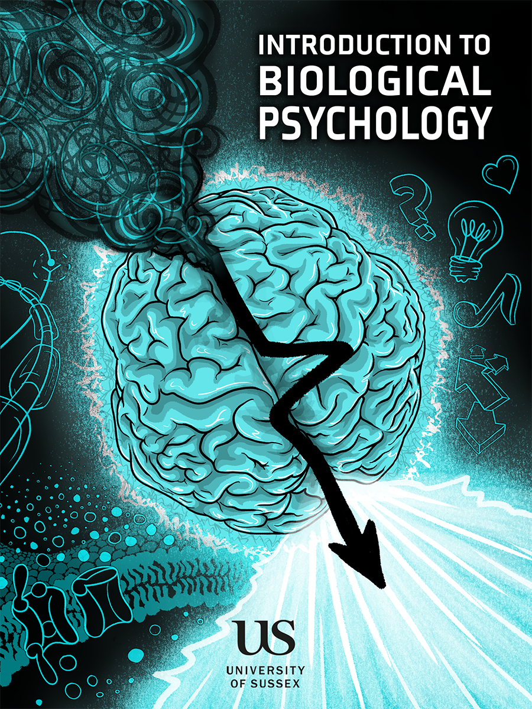

Traducción progresiva al español rioplatense
Libro de acceso abierto para estudiantes de grado sobre las bases biológicas de la conducta, la percepción, el movimiento, la salud mental, el envejecimiento y el funcionamiento neurológico.
Tres capítulos traducidos; los capítulos restantes permanecen temporalmente en inglés.
